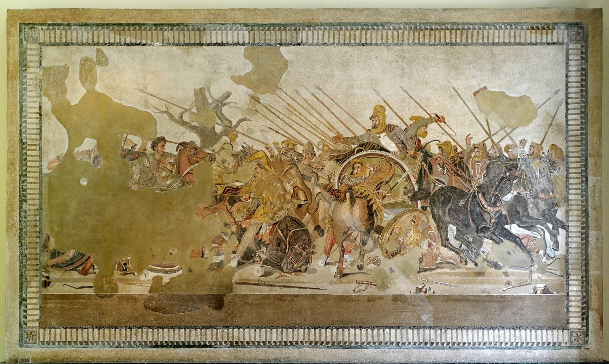
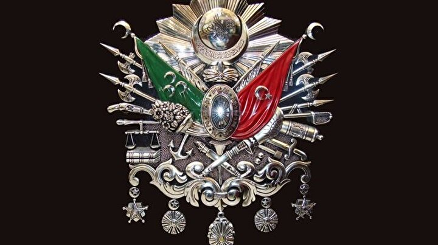

İskenderun (Yunanca: Αλεξανδρέττα, Aleksandretta, Türkçe karşılığı "Küçük İskenderiye"; Arapça: لواء اسكندرون, Lue İskenderun, anlamı "İskenderun Tugayı"[2]), Hatay'ın nüfus bakımından 2. büyük ilçesidir.[9] Nüfusu 248.335 kişidir[10]. İlçe Türkiye'nin en büyük limanlarından birine sahip olup bu bakımdan deniz ticaretinde önemli bir konumdadır. MÖ 333 yılında, Büyük İskender’in İssos yakınlarında kazandığı zaferden sonra Alexandreia adıyla kurulmuştur. Bu kent kurulmadan önceleri ise burada Myriandos adında bir Fenike şehri bulunmaktaydı. Makedonya Kralı Büyük İskender'in, Pers Şeyhi III. Darius’a karşı İsos Vadisi'nde üstünlük sağlamasıyla temeli atılan bu şehir, sahip olduğu coğrafi önemin etkisiyle tarihinde birçok defa işgale uğramıştır. Selevkoslar’dan Romalılara, ardından 395 yılında Doğu Roma'ya katılmış ve 7. yüzyıl ortalarında İslam Devleti'nden 1516 yılında Memlük İmparatorluğu’na geçmiş, 1517’de Yavuz Sultan Selim'in Mısır Seferi sırasında yapılan Mercidabık Savaşı'yla da Osmanlı İmparatorluğu'na katılan İskenderun'a, I. Dünya Savaşında Birleşik Krallık ve ardından Fransa egemen olmuştur. 1938 yılına kadar Fransız himayesinde Suriye'nin bir sancağı olarak kalmıştır. 5 Temmuz 1939'da Türk Ordusu'nun İskenderun'a girmesiyle, kurtuluş hareketinin temelleri atılmıştır.
İskenderun, Türkiye'ye katıldığı zamandan 1974 yılına kadar olan dönemde oldukça küçük bir kasabaydı. 1974 yılında üretime geçen Türkiye'nin üçüncü Demir-Çelik Fabrikası, kent yaşamına büyük canlılık getirmiştir. Ayrıca, süperfosfat fabrikası, bitkisel yağ, yem, un, konserve, salça, çırçır, dokuma, çeltik, oto ve makine yedek parçaları vb. endüstri dalları vardır. Boru hattı ile Batman'dan gelen petrol, İskenderun Limanı'ndan deniz yoluyla Mersin'e gönderilir. Limanda Demir-Çelik ve Süperfosfat fabrikalarının iskeleleriyle NATO'ya bağlı bir iskele ve demiryolu istasyonu bulunur. Türkiye'nin dördüncü büyük limanı olan İskenderun Limanı'nın yıllık yük kapasitesi 8.7 milyon tondur.[11]
İlçe çevresinde doğal plajlar ve yaylalarla çeşitli mesire yerleri vardır. İlçe merkezi, planlı bir biçimde çağdaş şehircilik anlayışına uygun olarak gelişmektedir. İlçenin ana caddeleri denize dik iner. Deniz kıyısındaki alan, Atatürk heykeli ve çevresiyle kıyıya paralel uzanan Atatürk Bulvarı, eğlence ve spor tesisleriyle yeniden düzenlenerek 1985'te hizmete açılmıştır.[12]
Bugün, İskenderun Türkiye'nin önde gelen en büyük ilçelerinden[13] biri olup, özellikle sanayi, deniz ticareti ve turizm alanında hızla gelişen bir şehirdir.
Köken bilimi
MÖ 1500'lü yıllarda Fenikeliler, Myriandrus kentini bu bölgede kurmuşlardır. Myriandrus adı, Mura-Wanda; "Muralı, Mura'ya" (Yüce Ana'ya) tapan halk demektir. Herodot'un bir yazısında "...güneyden alırsak aynı kıyı çemberi, Fenike'de Myriandrus Körfezi'nden Tripion Burnu'na kadar. Bu deniz kıyısı boyunca otuz insan soyu oturur..." geçmektedir. Bu bölgeyle ilgili Ksenophon, (MÖ 401-400) Anabasis'te, "...Kyros oradan Suriye içinde beş fersenk kadar ilerleyip Fenikeliler'in oturduğu kıyı şehri Myriandrus'a vardı. Burası birçok ticaret gemisinin demir atıp beklediği bir ticaret limanıydı..." demektedir. Strabon ise "...Küçük bir kasaba olan İsos'a ve Pinaros Irmağı'na gelinir. Büyük İskender ile Darius arasındaki mücadele burada olmuştur. Ve koy İsos Körfezi olarak adlandırılır. Bu körfezde Rhosos, Nicholopolis, Myriandrus, Nepsuestia ve Pylai gibi Kilikya ile Suriye arasında sınır olduğu söylenen kentler bulunur..." demektedir.[16]
MÖ 333 yılında Büyük İskender ile III. Darius ile yapılan savaşın ardından bölge Makedon hakimiyetine girmiştir. Bu tarihten sonra Myriandrus adı değiştirilerek, kente Alexandreia adı verilmiştir. Alexandreia, Hellen diline göre Alexandros (İskender) Yurdu anlamına gelmektedir. Büyük İskender'in Mısır'da kurduğu kente de bu isim verilmiştir. İkisini birbirinden ayırmak için, Kilikya bölgesindeki bu kente Alexandreia Minor (Küçük İskenderiye), Haçlılar döneminde de Alexandretta denilmiştir.
Coğrafya
Şehrin batı bölümünü Akdeniz çevreler, doğusu ise Nur Dağları'na dayamış bir haldedir. İskenderun Körfezi'nin güneybatıdan gelip kuzeye devam ettiği ovada yerleşmiştir. Nur Dağları'nın eteklerinde, genişliği 5 km2’yi bulan alan üzerinde kurulmuş olan İskenderun'un yüzölçümü 247 km2'dir.[18] 37 derece kuzey enlemi ile 36-37 derece doğu meridyenleri üzerinde yer almaktadır.
Kara, deniz ve hava ulaşımına elverişli bir kenttir. Yörenin kuraklığı şehrin bu kıvrımlara paralel olarak serilişi, ayrı bir özellik kazandırır. İlçe topraklarının kuzeyinde Payas, doğusunda Amanos Dağları, güneydoğusunda Belen, güneyinde Arsuz ve batısında Akdeniz bulunur.[19]. İskenderun Körfezi ise Akdeniz'in Hatay ve Adana illeri arasına sokulmuş olan en doğu noktasıdır. Kara ve deniz ulaşımında hizmetlerin oldukça gelişmiş olduğu bölgede ticaret büyük öneme sahiptir. Adını aldığı İskenderun ilçesinde bulunan liman, Türkiye'nin Akdeniz kıyısında bulunan en büyük ikinci limanıdır[20]. Geçmişte Orta Doğu'da yaşanmış olan bunalımlardan dolayı Beyrut'un eski önemini yitirmesi körfez ve çevresine değer kazandırmıştır. İskenderun Körfezi, Hatay'ın batısını Güvercinkaya'dan başlayarak Yeşilkent'e dek kuşatır. Körfez ilde yaklaşık 152 km'lik bir kıyı oluşturur. Akdeniz'in bu kesimlerinde tuzluluk oranı, binde 38-39, ortalama sıcaklık ise 22,2 °C'dir. Yöredeki doğal plajlar, ülke turizmi açısından son derece önemlidir.
Nüfus
İskenderun, limanı ve sahip olduğu sanayisi ile Türkiye çapında büyük önem taşır. İskenderun'un nüfusu 1950-1980 yılları arasında %274 oranında artmıştır. Böylece ilde, Antakya merkez ilçesinden sonra en fazla nüfusu barındıran İskenderun, aynı zamanda nüfusu en hızlı büyüyen ilçe de olmuştur. Nüfus yoğunluğu ve endüstrisi açısından Hatay'ın ve özellikle Türkiye'nin en büyük ilçelerinden[13] biridir. Türkiye İstatistik Kurumu'nun güncel adrese dayalı nüfus kayıt sistemi verilerine göre şehirdeki toplam nüfus yaklaşık 250.964[1] olarak tespit edilmiştir. Yapılan son nüfus sayımına göre ilçede 125.299 kadın ve 125.665 erkek yaşamaktadır. Nüfus miktarı alınan göçlerle hızla artmıştır. 1974 yılında Demir ve Çelik Fabrikası'nın üretime geçmesiyle İskenderun, yoğun göç almıştır. Bu göçlerin temel sebebi, sanayi alanındaki iş imkânlarıdır.
İklim
İskenderun'da Akdeniz iklimi görülür. Yaz sıcaklığı güneş ışınlarının düşme açısına; kuraklık ise alçalıcı hava hareketlerine bağlıdır. En sıcak ay ortalaması 32-34 °C, en soğuk ay ortalaması 10-12 °C dir. Yıllık sıcaklık ortalaması 18 °C dir. Kar yağışı ve don olayı çok ender görülür. Yılda ortalama kar yağan gün sayısı 0,1, dolu yağan gün sayısı ise 1,8'dir. Açık gün sayısı 88,3, bulutlu gün sayısı 225,8'dir. Yılda 51,2 gün ise kapalı geçmektedir[39]. En fazla yağış kışın, en az yağış yazın düşer. Kışın görülen yağışlar cephesel kökenlidir. Cephesel yağışlar en fazla bu ikimde görülür. Yıllık yağış miktarı yükseltiye göre değişir. Ortalama 600–1000 mm arasındadır. Yağış rejimi düzensizdir.
Bitki örtüsü
İskenderun'un doğal bitki örtüsünü makiler ve ormanlar oluşturur. Maki türleri, 4-5 metre boyunda, sert ve tüylü yapraklı bitkilerdir. Bunlar, 800 metre yükselti kuşağına dek yayılır. Mersin, defne, kekik ve lavanta yörede en çok rastlanan maki türleridir.
Nur Dağları'nın denize bakan yamaçlarında, makilik alanlardan sonra, 800 metreden 1200 metreye dek, ardıç gibi ibreli ağaçlarla, meşe, kayın, kızılcık, kavak, çınar ve tespih gibi yapraklı ağaçlardan oluşan ormanlar bulunur. 1200 metrenin üzerinde, ibreli ağaçlardan kızılçam, karaçam, sedir ve yer yer ardıçlardan oluşan geniş orman alanları vardır.
Bitki örtüsü
skenderun topraklarının ana çatısını Nur Dağları oluşturur. Bu dağ sırası ile körfez arasında İskenderun düzlüğü uzanır. Bu arazinin jeolojik yapısını peridotit, serpantin, gabro gibi yeşil kütleler oluşturur.[42]
Dağlar
Bölgedeki tek ve en önemli dağ sırası, Torosların güney kolunu oluşturan Nur Dağları'dır.[42] Bu dağlar Gavur ya da Nur Dağları olarak da bilinir. Toros Dağları sisteminin en güneyindeki bölümünü oluşturan dağlardır.
Kuzeyden güneye doğru uzanarak Asi Nehri'nin Akdeniz'e döküldüğü Samandağ deltasında sona erer. Bittiği noktanın karşısında kıyıda ve Suriye sınırındaki Keldağ vardır. Sıradağların büyük bir kısmı Hatay'da olup Amik Ovası ile Akdeniz'i birbirinden ayırır. Sıradağların en yüksek noktası Hatay'ın Hassa ilçesindeki Mığır Tepesi'dir. Bu noktada yükseklik 2262 m'dir.
Yer altı zenginlikleri
İskenderun'da yer alan 53 bin ton toplam rezervli krom yataklarında üretim yapılmaktadır. Demir boksitin toplam rezervinin 264 bin tonluk bölümü İskenderun'da toplanmıştır.
Hatay'da yer alan madenlerden biri de demirdir. 1 milyon 604 bin 400 ton toplam rezervli demir yatakları, Dörtyol, İskenderun, Kırıkhan ve Yayladağı ilçelerindedir. İskenderun'daki toplam demir rezervi 254 bin 400 tondur.
Hatay'daki mermer damarlarının rezervi bilinmemektedir. İskenderun'daki mermerler siyah renkli, ince beyaz kalsit damarlıdır.
İlin diğer madenleri arasında, İskenderun'daki 50 milyon ton toplam, 100 milyon ton jeolojik rezervli çimento hammaddesidir.
Tarih
Kent; sırasıyla Selevkosların, Romalıların, Bizanslıların, Arapların ve Osmanlıların egemenliğine girmiştir. Tarih öncesi devirler
Şehrin kuruluşu tarih öncesi devirlere dayanmaktadır. Karaağaç yöresinde Telliköy adını taşıyan höyükte Arkeolog Mc. Evan'ın bulduğu bazı çanak çömlek parçaları buranın antik çağ öncesi yerleşime açıldığını göstermektedir. MÖ 2000'li yıllarda burada Hititler'e bağlı Kadu Beyliği'nin kurulduğu bilinmektedir (Kadu, Hititçe körfez anlamına gelmektedir.). MÖ 1200'lü yıllardan önce Fenikeliler burada "Myriandrus" adıyla bir koloni kurdular. Burası MÖ 1200'den sonra merkezi Reyhanlı olan Hattini krallığına bağlandı. MÖ 7. yüzyılda Hurriler'in eline geçen İskenderun ve çevresi MÖ 6. yüzyılda Perslerin eline geçmiştir.
Büyük İskender dönemi
 İskenderun gerçek anlamıyla; Perslerin bölgede hakimiyetini yitirmesiyle, MÖ 333 yılında, Asya seferine çıkmış olan Makedonya Kralı Büyük İskender’in, Pers İmparatoru III. Darius’u İsos Vadisi'nde yenilgiye uğratmasıyla kurulmuştur. Bu kenti İskender'in adının verildiği diğer kentlerden ayırmak için buraya, "Küçük İskenderiye" anlamına gelen Alexandretta denilmiştir.
RRoma İmparatorluğu ve sonrası
Roma hakimiyeti başladıktan sonra, İranlıların istilasına uğrayan kalesi tahrip edilip, yeniden inşa edilen şehrin adı Peutinger tabularında bu bölgede cüzzam hastalığı yayılmış olduğu söylentileriyle Alexandreia Scabiasa olarak gösterilmektedir. Yine düzeltme amacıyla 4. yüzyıldan itibaren "Küçük İskenderiye" de denilmiştir. Kalesi muhtemelen Abbasi halifesi tarafından yeniden inşa ettirildi. İslam kaynaklarında ismi İskenderiye-İskenderuna olarak geçen şehir Doğu Roma-İslam rekabeti sırasında defalarca el değiştirmiş Büyük Selçuklu Devletine sonra Eyyubiler'e geçmiş, Birinci Haçlı seferi sırasında Tancrede tarafından zapt edilmiştir (1097). Antakya Dukalığı'nın Mısır Memlük Devleti tarafından ortadan kaldırılması üzerine 14. ve 15. yüzyılda bu bölge Memlükler'in Halep Valiliği ve bazen de Dulkadiroğulları Beyliği'nin nüfus sahasında kalmıştır.
Osmanlı dönemi
 Osmanlı yönetiminde daha sakin bir hayat sürdüren İskenderun ve çevresi 1607 yılında Sadrazam Kuyucu Murat Paşa ile Celali Canbolatoğlu arasında Oruç ovasında meydana gelen savaş dolayısıyla hareketli olaylara şahit olmuştur. 17. yüzyılın başlarında ise Halep valisi Nasuh Paşa, bugünkü varyant yolu güzün deresi kanalının kesiştiği noktada hâlâ bazı duvar kalıntılarının görüldüğü kalenin inşaatını başlatmıştır. Aynı zamanda, İskenderun, Osmanlı İmparatorluğu zamanında ticari ve stratejik özelliğini giderek arttıran bir yoğunlukla sürdürdü. Özellikle Doğu Akdeniz ticaretinde önemli bir liman vazifesi gören şehir, Orta Doğu ile olan ithalat ve ihracatta yerini almıştır.
217351015
Iskenderun Teknik Universitesi